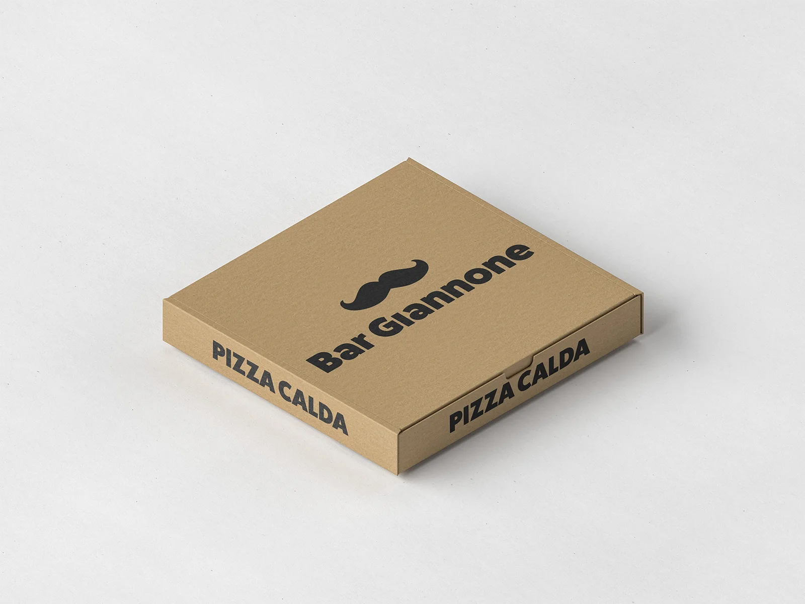
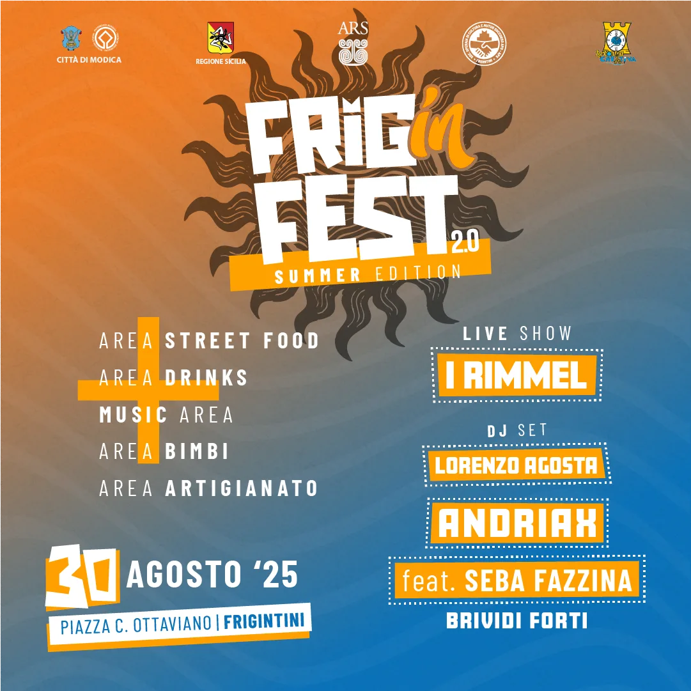
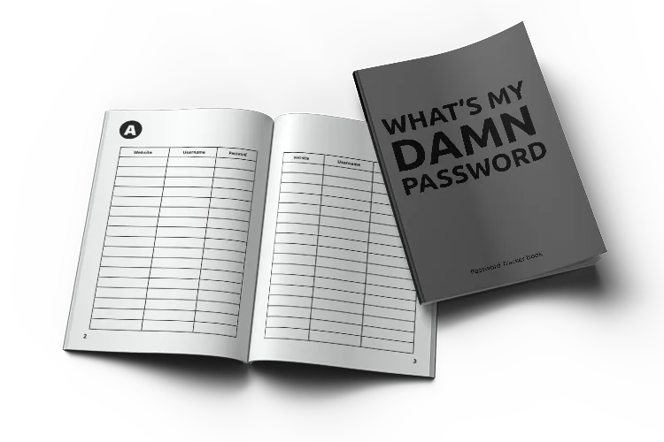
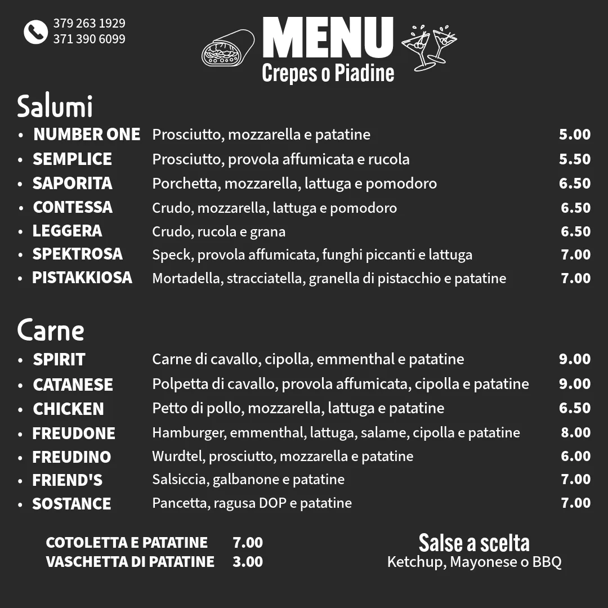
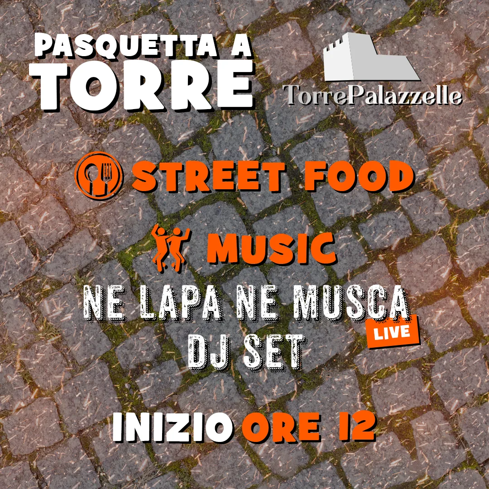
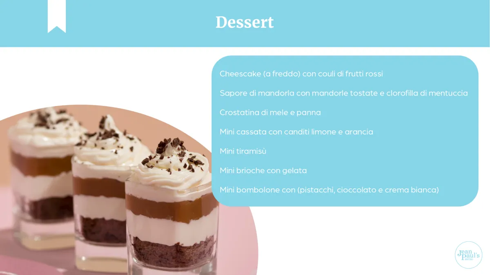
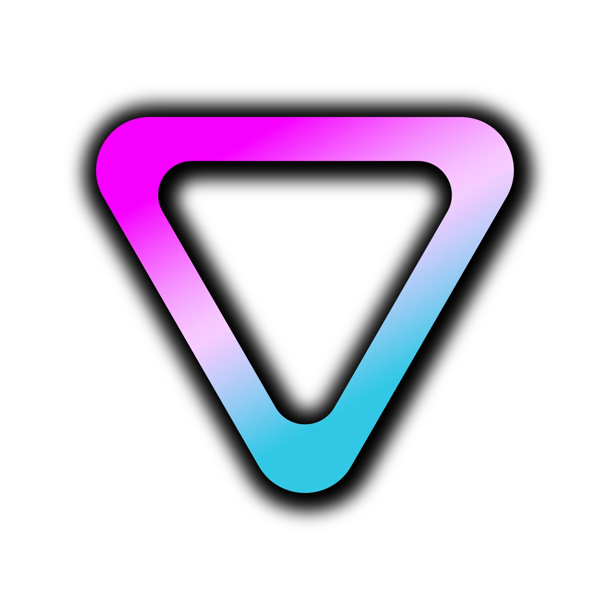

Work / 2023–25
Sei case study completi e una piccola raccolta di esplorazioni.

Identità · Social · Eventi

Festival · Brand system

Editoriale · Publishing
Campagna · Social education

Editoriale · Hospitality

Campagne · Eventi

Business communication

Social system
Ti serve un sistema, non solo un file?